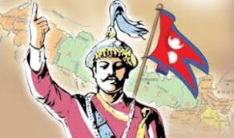
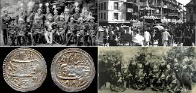

History & Politics
Nepal's modern history began with its unification under King Prithvi Narayan Shah in 1768. The subsequent century saw the rise of the hereditary Rana prime ministers, who reduced the monarchy to a figurehead and ruled autocratically until 1951. After the monarchy was restored, King Mahendra dissolved the nascent democratic experiment in 1960, instituting the direct rule of the palace through the partyless Panchayat system. This lasted until a mass pro-democracy movement in 1990 established a constitutional monarchy. However, this system was soon destabilized by a decade-long Maoist insurgency, which sought to replace the government with a people's republic, leading to a violent civil war from 1996 to 2006.
Nepal's modern history began with its unification under King Prithvi Narayan Shah in 1768. The subsequent century saw the rise of the hereditary Rana prime ministers, who reduced the monarchy to a figurehead and ruled autocratically until 1951. After the monarchy was restored, King Mahendra dissolved the nascent democratic experiment in 1960, instituting the direct rule of the palace through the partyless Panchayat system. This lasted until a mass pro-democracy movement in 1990 established a constitutional monarchy. However, this system was soon destabilized by a decade-long Maoist insurgency, which sought to replace the government with a people's republic, leading to a violent civil war from 1996 to 2006.